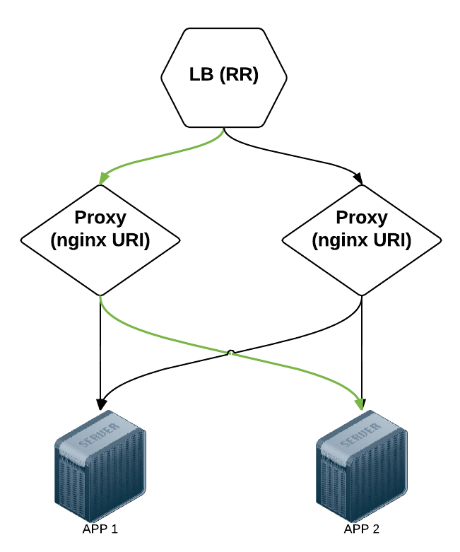
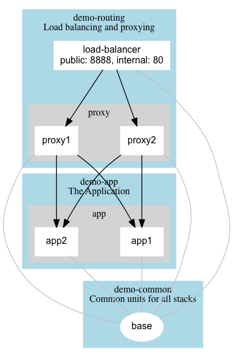

class: center, middle # Modelling applications with Percheron <div class="center"> </div> ### InfraCoders June 9th 2015 Ash McKenzie [@ashmckenzie](https://twitter.com/ashmckenzie) --- background-image: url(assets/percheron-bg.png) layout: true --- # Percheron * Open source command line tool to organise Docker images & containers * Similar to [Fig](http://www.fig.sh) / [Docker Compose](http://docs.docker.com/compose) but with a more application focus (and more features) * [github.com/ashmckenzie/percheron](https://github.com/ashmckenzie/percheron), started Feb 2015 * Strong and intelligent horse :) --- # Why? Existing tools lacked: * Concept of multiple collections of containers (Stacks) * Facility to build 'base' images * Dependency management for building / starting Notable features: * Support for PRE build and POST start scripts * Ability to generate dependency diagrams * Version control --- # The Application --- class: center, middle  --- # Percheron config The `.percheron.yml` has two main sections; `docker` and `stacks`: ```ruby docker: host: "https://boot2docker:2376" ssl_verify_peer: false stacks: - name: "demo-common" description: "Common units for all stacks" units: [...] - ... - name: "demo-app" description: "The Application" units: [...] ``` --- class: concepts_units_attributes # Concepts: Unit A Unit is either a Docker Image or Container. Abstraction exists to support 'base' images and 'non startable' containers. --- class: concepts_units_attributes # Unit attributes | Name | Req'd | Description | | ---------------------- | :---: | -------------------------------------------------- | | `name` | Y | | | `version` | Y | Semantic version | | `dockerfile` | N | Path to Dockerfile | | `docker_image` | N | Docker image instead of `dockerfile` | | `start_args` | N | Array of arguments to pass to the `docker_image` | | `instances` | N | Number of instances to build / start | | `ports` | N | Array of external:internal port mappings | | `dependant_unit_names` | N | Array of dependant Unit names to build / start | | `startable` | N | Is this Unit startable (or is it just an image)? | | `pre_build_scripts` | N | Array of scripts to execute PRE building the Unit | | `post_start_scripts` | N | Array of scripts to execute POST starting the Unit | --- # Unit example ```ruby - name: "load-balancer" version: 1.0.0 dockerfile: "load-balancer/Dockerfile" ports: - 8888:80 dependant_unit_names: - "common:base" - "proxy1" - "proxy2" ``` --- # Concepts: Stack A Stack is a collection of Units. Group Units together in a Stack to allow independent building and starting / stopping of other Stacks. The `.percheron.yml` file must have at least one Stack defined. --- # Stack attributes | Name | Req'd | Description | | ------------- | :---: | -------------------------- | | `name` | Y | | | `description` | N | Human oriented description | | `units` | Y | One or more Units | --- # Stack example ```ruby stacks: - name: "demo-routing" description: "Load balancing and proxying" units: - name: "demo-common" - name: "demo-app" - name: "demo-routing" ``` --- # Full .percheron.yml config --- class: full_config ```ruby --- docker: host: "https://boot2docker:2376" ssl_verify_peer: false stacks: - name: "demo-common" description: "Common units for all stacks" units: - name: "base" version: 1.0.0 dockerfile: "demo-common/base/Dockerfile" startable: false - name: "consul" version: 1.0.0 docker_image: "progrium/consul:latest" start_args: "-server -bootstrap -ui-dir /ui" ports: - "8500:8500" - name: "demo-app" description: "The Application" units: - name: "app" instances: 2 version: 1.0.0 dockerfile: "demo-app/app/Dockerfile" dependant_unit_names: - "demo-common:base" - "demo-common:consul" - name: "demo-routing" description: "Load balancing and proxying" units: - name: "load-balancer" version: 1.0.0 dockerfile: "demo-routing/load-balancer/Dockerfile" ports: - 8888:80 dependant_unit_names: - "demo-common:base" - "demo-common:consul" - "proxy1" - "proxy2" - name: "proxy" instances: 2 version: 1.0.0 dockerfile: "demo-routing/proxy/Dockerfile" dependant_unit_names: - "demo-common:base" - "demo-common:consul" - "demo-app:app1" - "demo-app:app2" ``` --- # Diagram --- background-image: default <div class="center">  </div> --- class: center, middle # Demo ## v0.8.x-dev --- # Thanks! ### We're hiring DevOps Engineers, come and talk to me! Give Percheron a go! [github.com/ashmckenzie/percheron](https://github.com/ashmckenzie/percheron) Credit to Dan Bradford ([@unroundme](https://twitter.com/unroundme)) for the awesome logo :)